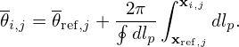

The magnetic surface average of a physical quantity G(ψ,𝜃,ϕ) is deï¬ned by
|
| (221) |
where the volume integration is over a small volume between two adjacent flux surfaces with Ψ differing by △Ψ. [This formula (with ï¬nite ΔΨ) is used in TEK code to calculate the radial heat flux.]
The above 3D volume integration can also be written as a 2D surface integration. The differential volume element is given by d3V = |𝒥|dψd𝜃dϕ, where 𝒥 is the Jacobian of (ψ,𝜃,ϕ) coordinates. Using this, equation (221) is written as
which is a 2D averaging over a magnetic surface and thus is called magnetic surface average. Note that the surface averaging of any n≠0 harmonic is zero (n is the toroidal mode number). Therefore the magnetic surface average contains only the contribution from the n = 0 component, i.e., axisymmetric component. (On the other hand, m≠0 poloidal harmonics of G can contribute to the surface average since the Jacobian has a poloidal angle dependence.) Using this and noting that 𒥠is axisymmetric, then expression (222) is written as
 | (223) |
where G0(𝜃) is deï¬ned by the following Fourier expansion:
 | (224) |
_________________________________________________________________________________________________________________________
“Zonal†and “mean†components
⟨G⟩ is sometimes called the “zonal†component of G if the radial wavelength of ⟨G⟩ is much smaller than the equilibrium scale length. If the radial wavelength of ⟨G⟩ is comparable to the equilibrium scale length, ⟨G⟩ is usually called “mean†component in tokamak literature. For example, mean flows are of system space scale and thus are easy to be observed in experiments. On the other hand, the “zonal†flow, which usually refers to the turbulence generated secondary flow, is of much smaller radial scale (the radial wavelength of zonal flow is of several Larmor radius) and thus is difficult to observe in experiments.
_________________________________________________________________________________________________________________________
Sometimes, we do not want the Jacobian to explicitly appear in the formula. This can be achieved by writing the differential volume element as
 | (225) |
Using Bp = |∇Ψ|∕R, the volume element is further written as
 | (226) |
Using this, the averaging deï¬ned in Eq. (221) is written as

|
| (228) |
(Equation (228) is used in the GTAW code to calculate the magnetic surface averaging.) Using Eq. (168) and Bp = |∇Ψ|∕R, equation (228) can also be written as
|
| (229) |
Using the expression of the volume element dτ = |𝒥|d𝜃dϕdψ, the volume within a magnetic surface is written
 | (230) |
Using this, the differential of V with respect to ψ is written as
 | (231) |
Using this, Eq. (229) is written as
| ⟨G⟩ = ∫ 02πG|𝒥|d𜃠|